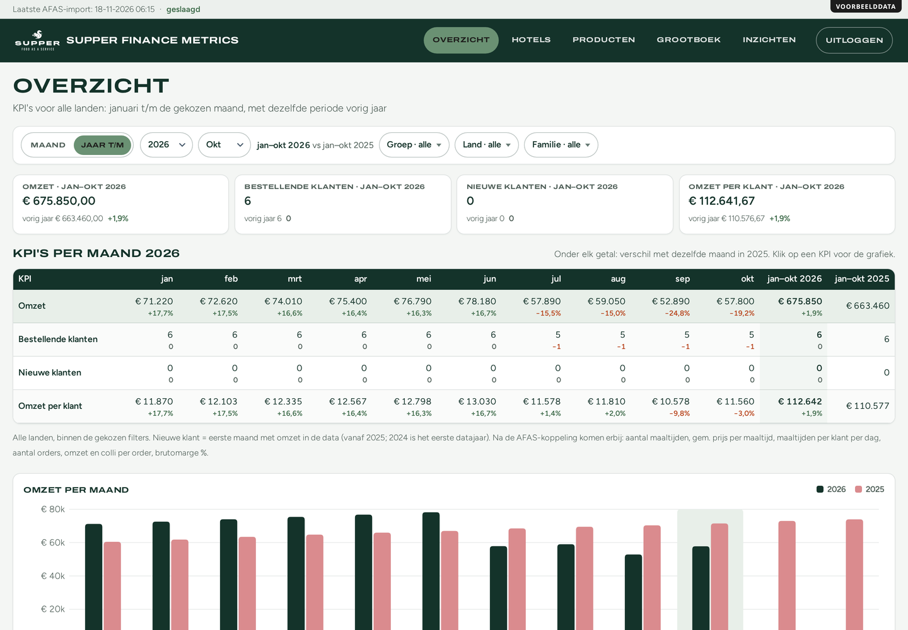
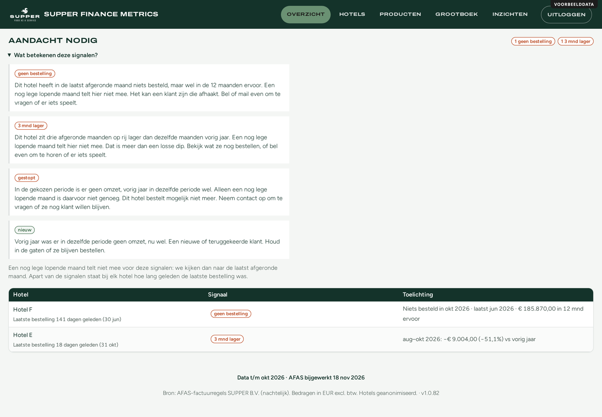

Case
KPI-dashboard op AFAS: inzicht in de cijfers — Supper
Supper had de cijfers wel, maar moest ze in een Excel-bestand opzoeken. Nu opent het team een dashboard dat direct laat zien hoe het bedrijf ervoor staat en waar actie nodig is.



Vraag
Wel cijfers, geen overzicht
Supper levert aan hotels. De omzetcijfers stonden in een Excel-bestand met tabbladen per jaar, per maand en per product. Alles stond erin, maar je moest het zelf opzoeken en zelf bedenken wat het betekende. Hoe gaat het nu echt, en waar moet je iets mee? Dat zag je pas als je ernaar ging zoeken.
En het bestand klopte alleen als iemand er eerst nieuwe gegevens uit AFAS in had gezet.
Wat ze nu kunnen
Wat het dashboard laat zien, en wat je ermee doet
Bij het openen zie je meteen de belangrijkste cijfers: omzet, bestellende klanten, nieuwe klanten en omzet per klant, steeds naast dezelfde periode vorig jaar.
Van inzicht naar actie
Signalen met een suggestie voor actie
Het dashboard toont niet alleen cijfers, maar wijst ook aan wat opvalt. Heeft een hotel bijvoorbeeld al een tijd niet besteld, of loopt de omzet terug? Dan staat het onder “Aandacht nodig”, met een suggestie voor wat je kunt doen.
- Per hotel zie je wie groeit en wie terugloopt, met de omzet per maand en welke producten het hotel afneemt.
- Per product zie je welke hotels het kopen en hoe dat verandert.
- Een eigen vraag stel je onder Inzichten gewoon in het Nederlands, bijvoorbeeld welke hotels dit kwartaal minder bestelden. Je krijgt een kort antwoord met een tabel of grafiek. De cijfers komen uit dezelfde gegevens; de AI rekent niets zelf uit.
- Elke ochtend actueel. ’s Nachts haalt het dashboard zelf de nieuwe factuurregels uit AFAS op.

-

Aandacht nodig: wie bestelt niet meer · Voorbeelddata, geen echte cijfers -

Inzichten: een vraag in het Nederlands, met antwoord · Voorbeelddata, geen echte cijfers

Aanpak
Van Excel-bestand naar dashboard in 39 dagen
Ik begon bij het Excel-bestand dat ze al gebruikten: de tabbladen werden de eerste schermen. Na de eerste dag stond er al een werkende versie met login. Daarna breidde ik het stap voor stap uit: een overzicht per hotel, de vraagfunctie en de nachtelijke koppeling met AFAS. Binnen 39 dagen draaide alles op AFAS en was Excel niet meer nodig.
- Het dashboard leest alleen. In AFAS verandert er niets.
- Iedere gebruiker logt in met een eigen account.
- Een gefilterde weergave deel je met een link.
- Mislukt de nachtelijke update, dan zie je dat meteen in het dashboard.
De schermafbeeldingen op deze pagina tonen voorbeelddata, geen echte cijfers van Supper.
Apart van dit dashboard beheer ik ook de webshop van Supper Services.
Herkenbaar?
Heb jij wel cijfers, maar geen overzicht?
Vertel welke cijfers je nu bijhoudt en welke beslissingen je ermee wilt nemen. Dan kijk ik of een dashboard op je eigen gegevens past. Soms is een beter ingericht Excel-bestand genoeg; dan zeg ik dat ook.